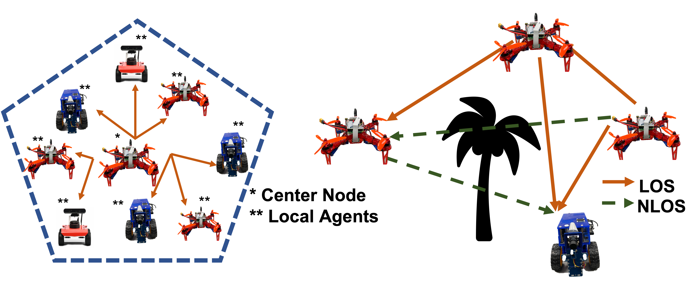

|
Jumman Hossain I'm a PhD researcher at UMBC in the Mobile, Pervasive, and Sensor Computing (MPSC) Lab, specializing in reinforcement learning (RL) and machine learning (ML) for autonomous systems and robotics. I focus on optimizing decision-making in complex environments. During my Summer 2024 internship at Stormfish Scientific Corporation, I developed reinforcement learning models for navigation in XR simulations using AuroraXR®. My work focused on enhancing multi-robot coordination in contested environments, utilizing real-time synchronization between virtual and physical robots through the AuroraXR ROS Bridge. I am currently seeking a Full time/Summer internship where I can apply my expertise in reinforcement learning, robotics, and machine learning to solve challenging real-world problems. |

|
ResearchMy interests lie in reinforcement learning, autonomous navigation, and robotics. I am passionate about advancing autonomous navigation through learning-based optimization techniques. My work focuses on developing algorithms for better understanding and interaction with physical environments—optimizing exploration, navigation, and motion planning, especially in sparse-reward and challenging scenarios. |

|
QuasiNav: Asymmetric Cost-Aware Navigation Planning with Constrained Quasimetric Reinforcement Learning
Jumman Hossain, Abu Zaher Faridee, Nirmalya Roy, Jade Freeman, Timothy Gregory, Theron Trout ICRA 2025 (Under Review) project page / arXiv This paper presents an asymmetric cost-aware navigation method using quasimetric-constrained policy optimization to improve navigation planning in complex, real-world environments with uneven costs and constraints. |

|
SERN: Simulation-Enhanced Realistic Navigation for Multi-Agent Robotic Systems in Contested Environments
Jumman Hossain, Emon Dey, Snehalraj Chugh, Masud Ahmed, MS Anwar, Abu-Zaher Faridee, Jason Hoppes, Theron Trout, Anjon Basak, Rafidh Chowdhury, Rishabh Mistry, Hyun Kim, Jade Freeman, Niranjan Suri, Adrienne Raglin, Carl Busart, Timothy Gregory, Anuradha Ravi, Nirmalya Roy ICRA 2025 (Under Review) Video / arXiv This paper introduces a simulation-enhanced approach for realistic navigation planning in multi-agent robotic systems, optimizing strategies for operations in contested and unpredictable environments. |
|
|
TopoNav: Topological Navigation for Efficient Exploration in Sparse Reward Environments
Jumman Hossain, Abu Zaher Faridee, Nirmalya Roy, Jade Freeman, Timothy Gregory, Theron Trout IROS 2024 Video / arXiv A navigation framework that leverages hierarchical reinforcement learning (HRL) to enable autonomous robots to efficiently explore unknown areas. By building active topological maps and incorporating intrinsic rewards, TopoNav enhances navigation accuracy and adaptability, especially in sparse-reward environments. |
|
|
EnCoMP: Enhanced Covert Maneuver Planning with Adaptive Target-Aware Visibility Estimation using Offline Reinforcement Learning
Jumman Hossain, Abu Zaher Faridee, Nirmalya Roy, Jade Freeman, Timothy Gregory, Theron Trout ACSOS 2024 arXiv This approach enhances maneuver planning by using target-aware visibility estimations and offline reinforcement learning, making it highly suitable for complex and contested environments where maintaining cover is critical. |
|
|
CoverNav: Cover Following Navigation Planning in Unstructured Outdoor Environment with Deep Reinforcement Learning
Jumman Hossain, Abu Zaher Faridee, Anjon Basak, Derrik Asher, Nirmalya Roy ACSOS 2023 arXiv CoverNav presents a deep reinforcement learning approach for navigation planning that prioritizes cover following in unstructured outdoor environments. |
|

|
SynchroSim: An Integrated Co-simulation Middleware for Heterogeneous Multi-robot System
Emon Dey, Jumman Hossain, Nirmalya Roy, Carl Busart IEEE DCOSS 2022 arXiv SynchroSim provides an integrated co-simulation middleware that supports coordination and interaction among heterogeneous multi-robot systems. It ensures effective communication and synchronization across diverse platforms, allowing robust development and testing of cooperative robotic applications in dynamic environments. |
|
I utilized source code from here to create this website. |